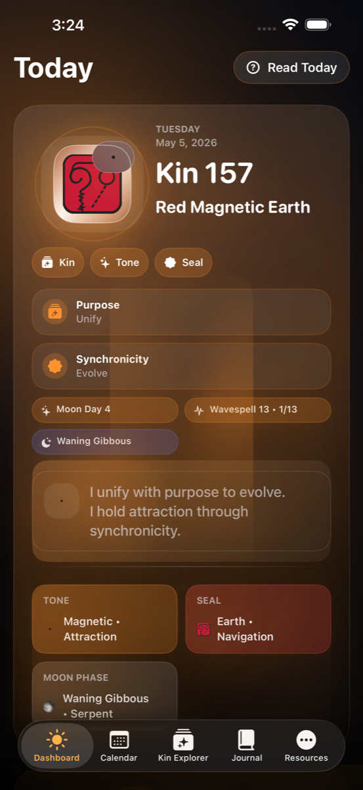
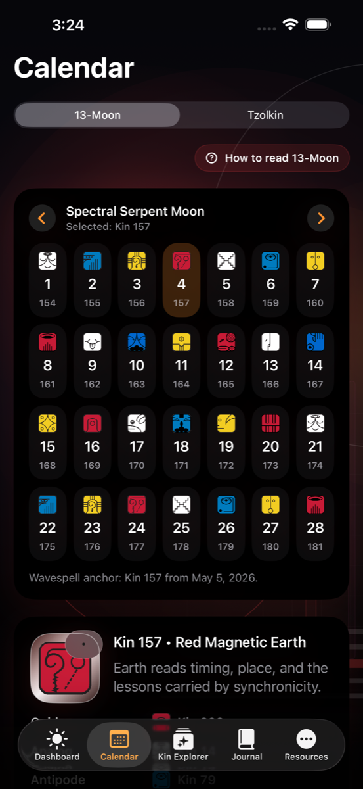
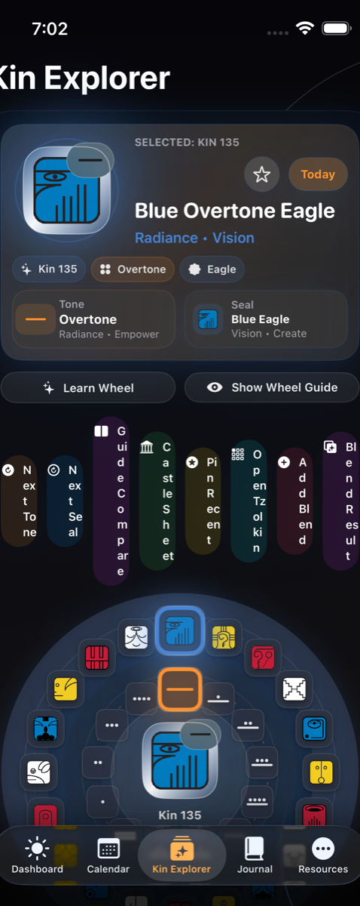
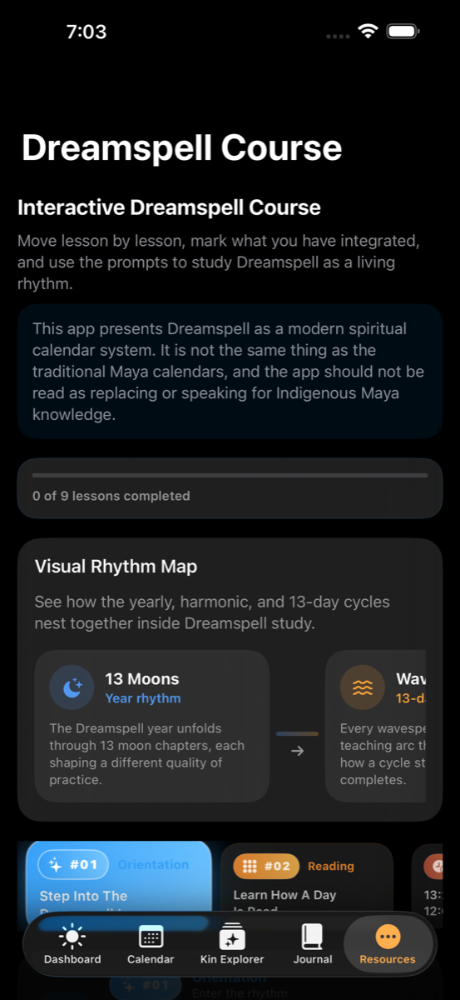
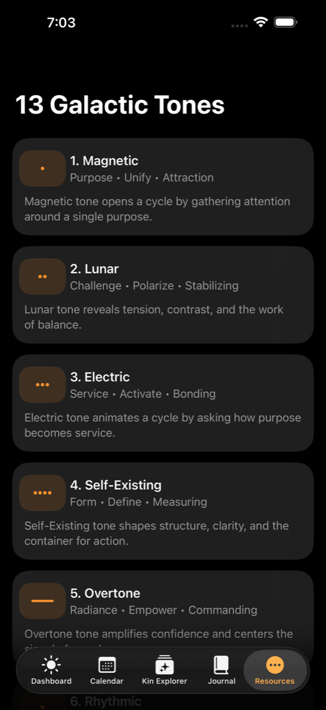
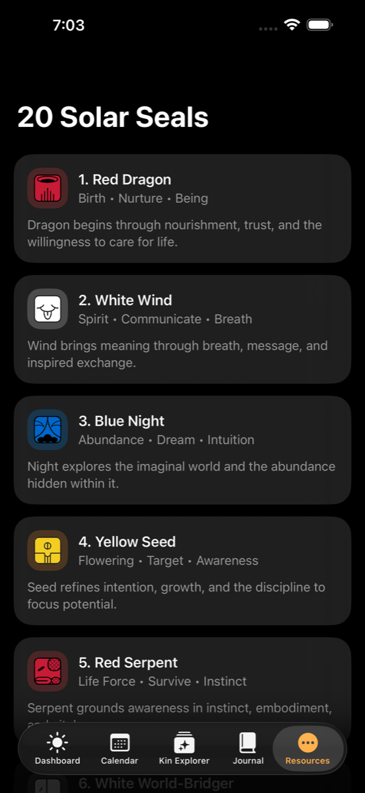
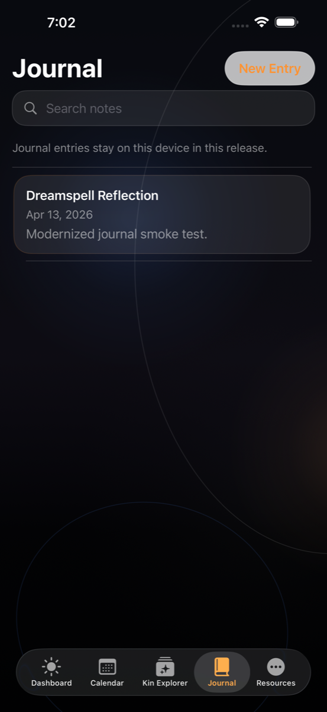
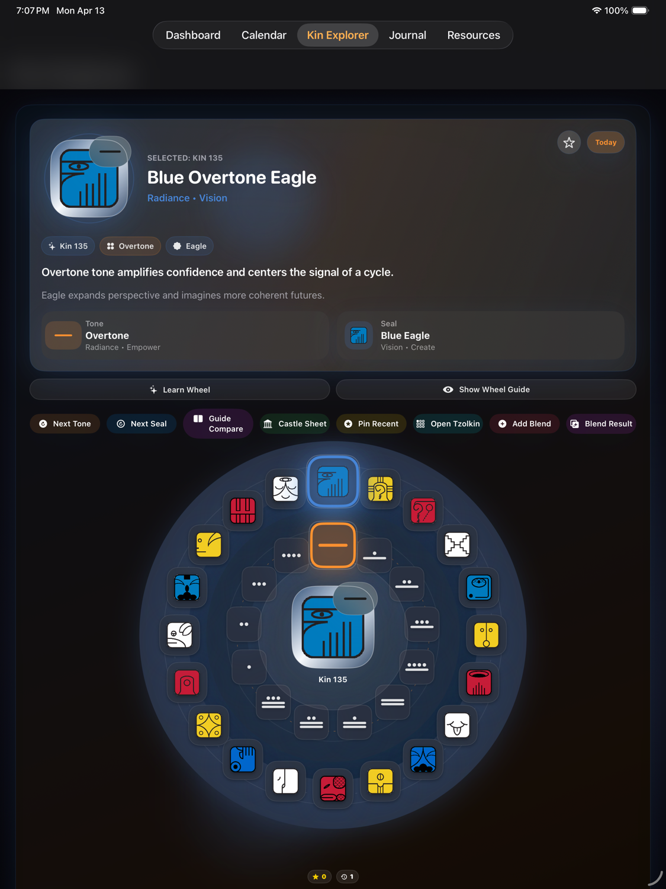

Check today’s signature quickly
The Dreamspell app surfaces today’s kin, the current Gregorian date, lunar phase, and a daily affirmation without requiring an account or a network connection.
Dreamspell guide and app
Dreamspell is a modern companion for studying the 13 Moon year, the 260-day Tzolkin cycle, galactic tones, solar seals, and daily kin reflection. This site gives you a solid starting point, then points you toward the Dreamspell app for iPhone and iPad when you want the guided experience in one place.
Dreamspell version 1.6.1 is live on the App Store as of April 14, 2026. Start with the beginner path if you want context first, or use the Get App page for the direct store link plus support and privacy details.
The Dreamspell app surfaces today’s kin, the current Gregorian date, lunar phase, and a daily affirmation without requiring an account or a network connection.
Browse the 13 Moon year, inspect the Tzolkin, and use the guide on this site to understand how the 260-day rhythm is organized.
Kin Explorer helps you combine galactic tones and solar seals, inspect a kin more closely, and reflect on group kin blends inside the app.
The Journal feature keeps searchable notes tied to dates and kin on your device, while Resources gathers context, reference material, and study notes.
Start Here
If you are new to Dreamspell, these are the questions that usually make the rest of the calendar system click into place.
The Dreamspell year is commonly studied as thirteen 28-day moons that create a repeating annual rhythm for reflection, intention, and practice.
The Tzolkin is the 260-day cycle at the heart of Dreamspell study. Each day carries one kin, which combines a galactic tone and a solar seal.
The 13 tones shape the movement of a cycle, the 20 seals provide the symbolic qualities, and wavespells follow the 13-tone sequence across a 13-day arc.
Inside The App
This gallery follows a curated screenshot manifest so the public site keeps using the latest approved repo captures for each step of the Dreamspell learning journey.
The fastest way into Dreamspell is to see today’s signature, the current Gregorian date, and the reflection context tied to the day.

The calendar view helps people move from dates into rhythm, so the 13-Moon year and the Tzolkin stop feeling abstract.

Kin Explorer is where tones, seals, and combinations become interactive instead of theoretical.

The app teaches through both guided Dreamspell lessons and dedicated reference screens for tones and seals.



Reflection stays local to the device in the current release, making journaling part of the study flow instead of a separate tool.

The iPad layout gives the Explorer more room and makes ongoing study feel more spacious on larger screens.

Start Here
If you want the cleanest newcomer path, start with the dedicated Start Here page. If you want the “why” first, open the explainer. If you prefer reference material, jump straight into tones or seals and come back to the guide when you want more detail.
Core Ideas
The guide goes deeper, but this quick map can help you orient before you start reading more closely.
A kin is a daily signature created by one galactic tone and one solar seal. A name such as Red Electric Skywalker combines color, tone, and seal into one reading.
The Tzolkin is the 260-day matrix created by cycling thirteen tones across twenty seals. It is one of the main study surfaces inside the app.
A wavespell follows the full thirteen-tone arc across thirteen days, helping you study how a process unfolds from purpose to completion.
The 13 Moon cycle gives the annual rhythm, while the Tzolkin provides the 260-day sequence. Dreamspell study often moves between both views.
Learning Hub
People often arrive wanting calendar background first, then later decide they want the app for day-by-day use. These pages are arranged to support that path intentionally.
Move through Dreamspell in the simplest order: what it is, 13 Moons, Tzolkin, tones, seals, and then the app.
Read the beginner-friendly explainer about why people use Dreamspell and how the app helps without stretching the product promise.
Read a plain-language walkthrough of the 13 Moon calendar, Tzolkin, kin, tones, seals, wavespells, and how the app helps you study them.
Browse the full list of 13 galactic tones, 20 solar seals, and 13 Moon names in one reference-friendly page.
Find clear answers about the system, the app, privacy, offline use, iPad support, Spanish localization, and the distinction from traditional Maya calendars.
Use the dedicated Get App page for the live store link, support/privacy context, and the clearest route from learning pages into the current App Store listing.
Read the short public-facing release notes and the current timeline without digging through internal development details.
Use the public support and privacy pages for contact details, troubleshooting guidance, and current app data-handling information.
Further Study
These are useful starting points if you want more background reading alongside the in-app study tools.
A reference point for Dreamspell-oriented teachings, tones, seals, and 13 Moon study.
Background reading on the 13 Moon structure and prompts for personal study and reflection.
A study companion for the 260-day cycle that pairs well with the app’s Calendar and Tzolkin views.
Dreamspell App
Dreamspell for iPhone and iPad brings daily kin lookup, calendar browsing, kin exploration, private journaling, and bundled reference content into one place so your study can move from reading into regular use. The live App Store listing is available now, and the Get App page keeps the direct download path together with public support and privacy links.